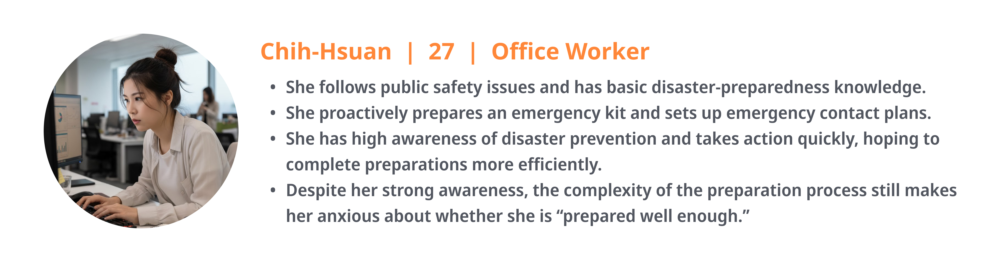
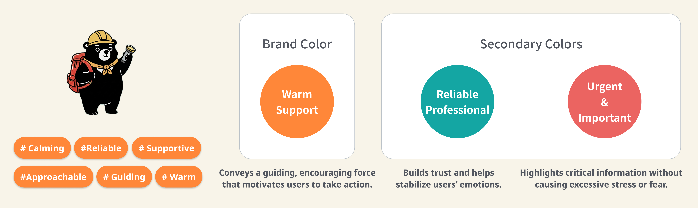
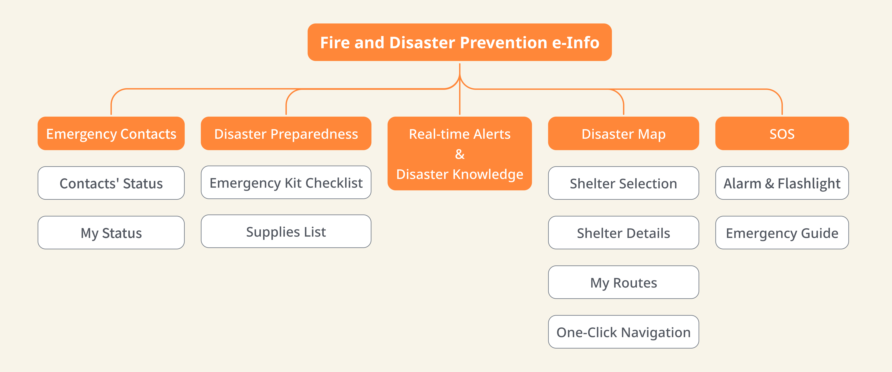
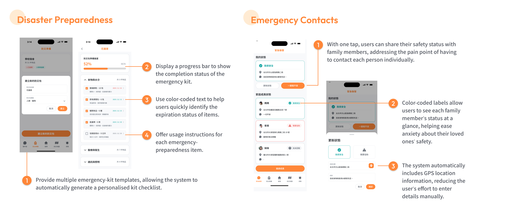
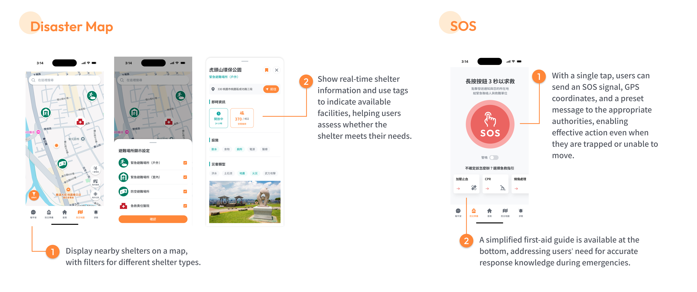

Background
As part of the “Human-Computer Interaction Design” module at NCCU, I collaborated with a talented team of four to lead the end-to-end redesign of a critical disaster-prevention mobile application. Over this intensive 3-month project, our team navigated every phase of the human-centred design process—from defining the initial problem statement and mapping user journeys to delivering intuitive, accessible solutions for real-world crises.
Project Title
Fire and Disaster Prevention e-Info App Redesign
Problem Statement
Despite Taiwan’s high exposure to natural disasters, proactive public preparedness remains low. While over 80% of citizens stay alert, only 40% take concrete action. This gap is exacerbated by the low adoption and poor usability of existing government disaster prevention apps.
An analysis of user reviews highlights critical pain points:
- Overloaded Feature Set: Disjointed functionalities that clutter the interface.
- Chaotic Architecture: Poorly structured information making essential tools difficult to locate.
- Delayed Updates: A critical lack of real-time emergency broadcasts.
- Ineffective Maps: Inaccurate shelter data and poorly functioning offline navigation.
Consequently, users struggle to navigate critical response workflows before, during, and after a crisis.
Data Sources: MetaSurvey, and 153 1-to-3-star reviews from the App Store and Google Play.
Target User Research
Comprehensive user research revealed that users face distinct challenges across three critical stages: pre-disaster preparation, active crisis response, and post-disaster recovery. By mapping out these pain points in an end-to-end user journey, we identified clear opportunities to reduce cognitive load and streamline access to vital emergency resources.

Our Solution
Target Audience Definition
Our research uncovered a critical insight through our primary persona, Chih-Hsuan: even highly proactive users are overwhelmed by the complexity of disaster preparation. Her core anxiety of never feeling "prepared well enough" fundamentally shifted our design strategy from simply delivering information to creating an efficient, anxiety-reducing workflow.

Brand Personality & Visual Design
To address the underlying anxiety users feel toward disaster preparedness, our brand personality shifts the app from a sterile "information tool" to a "trusted, warm partner." Instead of overwhelming users with dense instructions, the new design emphasizes psychological support and step-by-step guidance. By presenting an approachable and reliable interface, the app transforms daunting emergency planning into a manageable, routine task that naturally integrates into everyday life.

Information Architecture
To resolve the chaotic and overloaded nature of the existing app, we completely restructured the Information Architecture to prioritise immediate emergency needs. Features were streamlined into intuitive pre-disaster, active crisis, and post-disaster flows, ensuring users can access critical tools without having to navigate complex menus.

User Flow and UI Design
Our core solutions focus on actionable, personalized safety tools:
- Disaster Preparedness: Provides multiple templates to auto-generate personalized emergency-kit checklists; it utilizes progress bars to track completion, color-coded text to instantly identify item expiration dates, and clear usage instructions for every item.
- Emergency Contacts: Offers a unified interface to instantly broadcast safety statuses and view family members' locations, massively reducing panic.

- Disaster Map: Clearly displays nearby shelters, allowing users to filter by specific shelter types during an emergency.
- SOS Module: Empowers trapped or immobilized users to send an immediate SOS signal and GPS coordinates with a single tap, supplemented by a simplified first-aid guide to ensure accurate medical responses during crises.

Usability Testing and Iterations
Usability testing revealed critical areas for refinement. By observing users interact with the initial prototype, we identified specific friction points and implemented targeted iterations to ensure the app performs intuitively during high-stress, real-world emergencies:
- Visual Hierarchy & Clarity: To resolve ambiguity with square checkboxes and subtle text color states, we introduced high-contrast, orange circular indicators and increased font sizes for immediate visual confirmation.
- Emergency Contacts Redesign: Addressing confusion over small "Report Safety" buttons and unclear "Family" tabs, we overhauled the dashboard to feature a prominent "one-tap safety confirmation" that allows users to instantly broadcast their status and accurately track family members.
- SOS Feature Overhaul: Because users felt anxious using passive SOS messaging without immediate feedback, we replaced it with a high-impact feature that triggers a loud alarm and flashing lights to instantly signal for help.